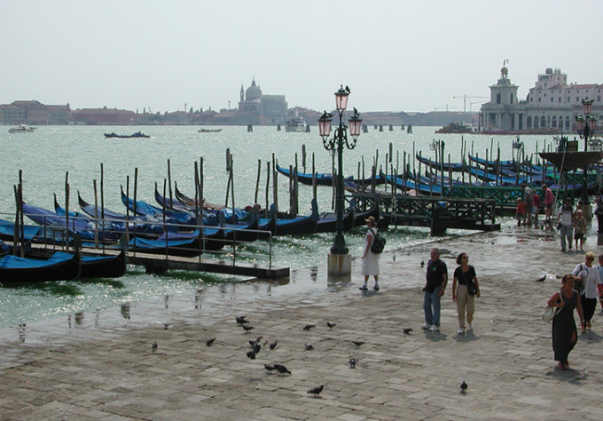
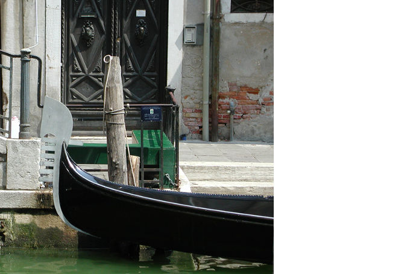
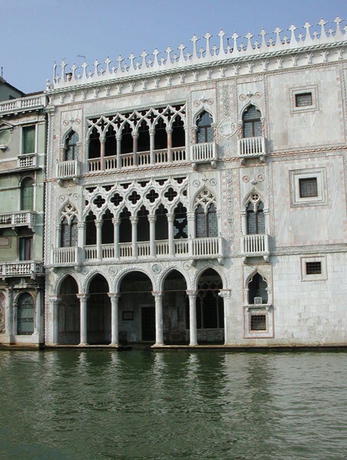
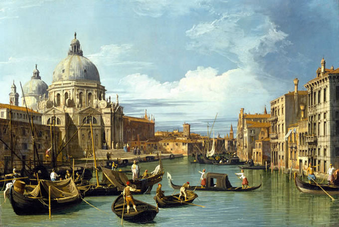
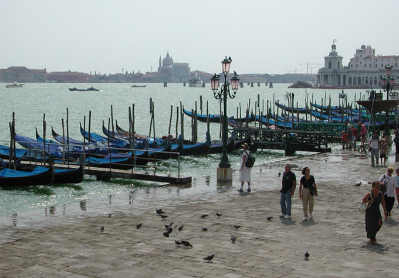
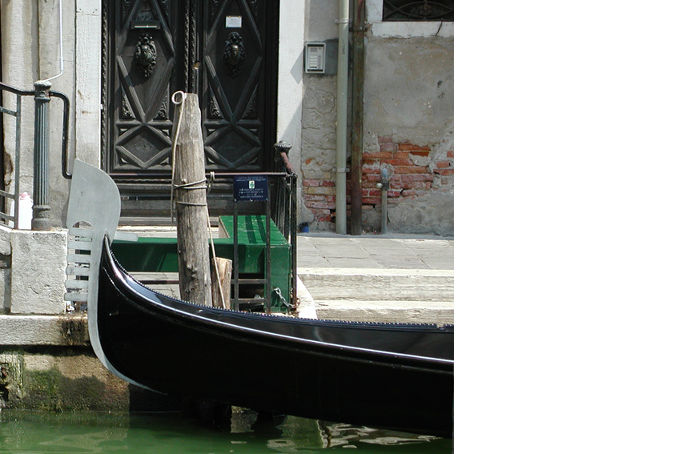
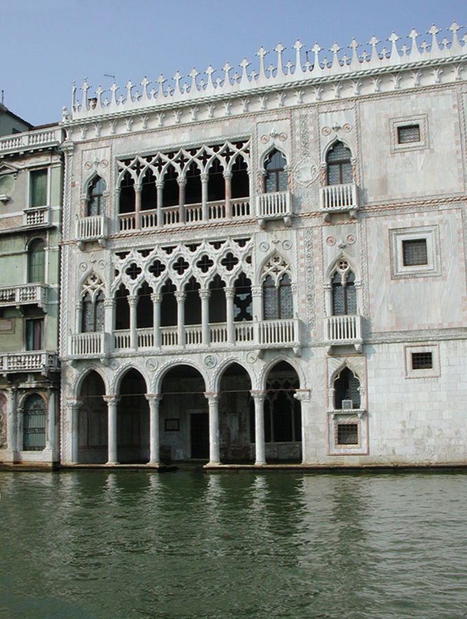
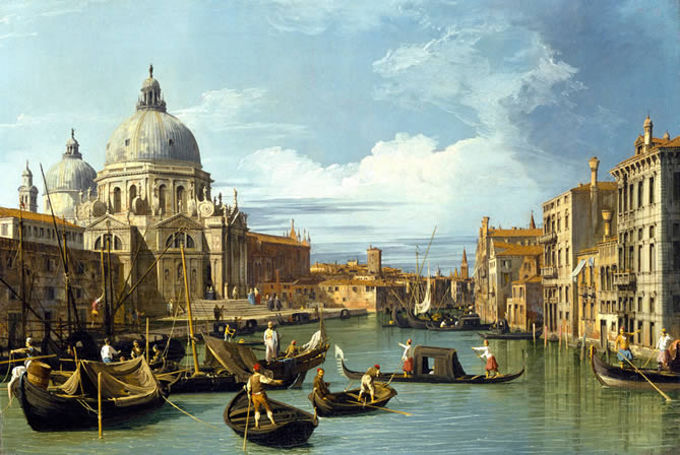

Photos de Venise
Photo de Venise vacances printemps 2015
Photo Venise de cet hiver
Photo Venise mois de mars
Photo Venise 17 siècle
Photo de Venise vacances printemps 2015
Photo Venise de cet hiver
Photo Venise mois de mars
Photo Venise 17 siècle
